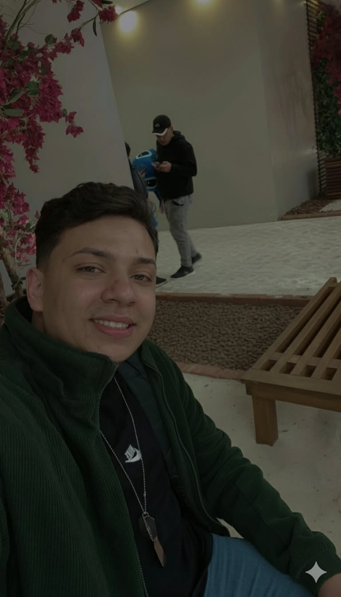
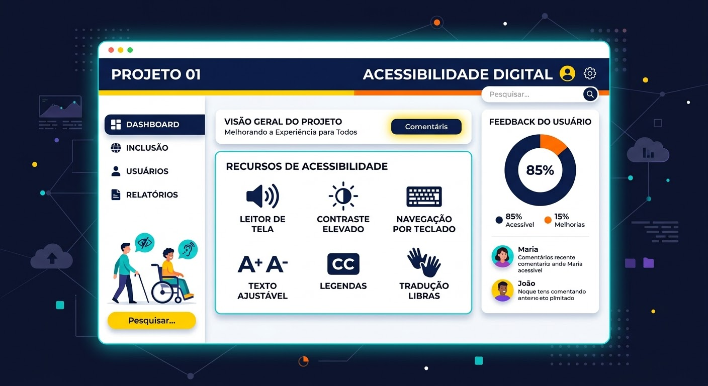
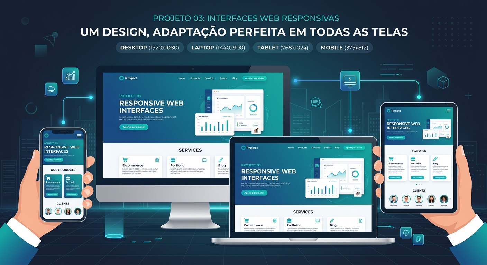

Análise e Desenvolvimento de Sistemas
Instituição: Universidade Cruzeiro do Sul
Grau: Tecnólogo
Previsão de Conclusão: 2º Semestre de 2027

Desenvolvedor Web em formação
Sou estudante de Análise e Desenvolvimento de Sistemas e atuo como Desenvolvedor Web em formação. Sou uma pessoa dedicada, esforçada e constantemente motivada a aprender novas tecnologias e aprimorar as minhas competências. Procuro oportunidades para aplicar os meus conhecimentos na resolução de problemas reais e evoluir profissionalmente.
Atualmente estou cursando Tecnólogo em Análise e Desenvolvimento de Sistemas na Universidade Cruzeiro do Sul. Tenho grande interesse em desenvolvimento Web (Front-end e Back-end), Inteligência Artificial e Bancos de Dados. Busco minha primeira oportunidade profissional na área de Tecnologia da Informação para colaborar em equipe e solucionar problemas reais.
Instituição: Universidade Cruzeiro do Sul
Grau: Tecnólogo
Previsão de Conclusão: 2º Semestre de 2027
Instituição: INTEC
Foco: Leitura técnica e conversação inicial

Objetivo: Facilitar o entendimento e a comunicação entre pessoas com deficiência cognitiva e seus cuidadores ou pessoas ao redor.
Tecnologias: HTML5, CSS3
Minha Atuação: Desenvolvimento de código front-end com foco em melhorias contínuas de interface e acessibilidade.
Ver RepositórioObjetivo: Aplicação voltada para organização e controle financeiro pessoal.
Tecnologias: Lógica de Programação, Manipulação de Dados
Minha Atuação: Estruturação da lógica de código e organização dos fluxos de dados.
Ver Repositório
Objetivo: Criação de componentes, formulários e layouts focados em acessibilidade e responsividade.
Tecnologias: HTML5, CSS3
Minha Atuação: Construção de estruturas semânticas e estilização responsiva.
Ver RepositórioVocê pode visualizar ou fazer o download do meu currículo completo em formato PDF no botão abaixo:
Baixar Currículo em PDFEntre em contato comigo através dos canais oficiais abaixo: